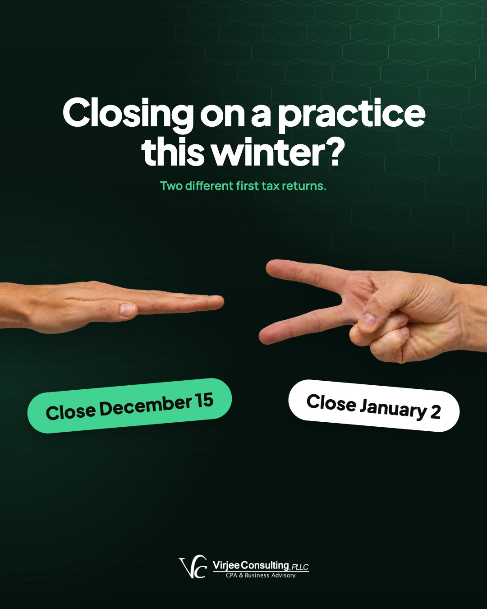

All eight Virjee Consulting posts for November, each shown with its caption.
V
Virjee Consulting
CPA and business advisory for dentists
Tue Nov 10 · 🌐
The worst time to learn what a bank thinks of you is two weeks after you find the practice you want to buy.
We tell associates to be bankable. Your credit, cash on hand, monthly debt payments and production history should get a yes from a lender today, next month or six months from now.
Most of those take months to change, and a good practice rarely sits on the market that long.
Here's the order we'd follow if you're buying your first practice in 2027.
Get bankable first, then pick your CPA and attorney. After that, find the practice, read the seller's numbers and sign the LOI. Closing comes last.
Starting with the bank means you're ready to move when the right practice comes up, and you won't be pulling together tax returns while another doctor makes the offer.
Which step are you on right now?
#Dentists#DentalCPA#PracticeAcquisition
👍 Like💬 Comment🔁 Repost➤ Send
V
Virjee Consulting
CPA and business advisory for dentists
Tue Nov 17 · 🌐
When a well-run practice comes up for sale, several doctors look at it, and one already knows what the bank will lend.
That doctor usually gets it. The others are often still looking for their last two tax returns.
The homework is shorter than it sounds. Know what you can borrow, and have your CPA and attorney picked before the LOI. Pick the wrong team and you've bought yourself a job.
Put an associate in your chair and spend four years in Hawaii. Would your practice have money in the bank when you got back?
If the answer is no, we call that golden handcuffs. The practice only makes money while you're the one producing.
We'd put any 2027 purchase through one more test. You should be able to sell it at any time for more than you paid, the way you'd think about real estate.
December 15 or January 2? Picking your practice closing date by rock, paper, scissors would be an expensive shortcut.
Close in mid-December and the equipment can be placed in service this year, as long as it's ready and available for use by December 31. Depending on your entity, those deductions may land in a year when you also had associate income. Close in January and they move to 2027.
Neither date is automatically right, so we run both side by side before anyone signs. Here's how we help buyers with a Q4 close: https://www.dentalcpausa.com/buy-a-practice/
#Dentists#DentalCPA#PracticeAcquisition

👍 Like💬 Comment🔁 Repost➤ Send
V
Virjee Consulting
CPA and business advisory for dentists
Tue Nov 24 · 🌐
Happy Thanksgiving from all of us at Virjee Consulting.
We hope you get a long weekend with an empty schedule, a full table, and nobody asking you to take a quick look at a molar between courses.
Thank you to every dentist who trusted us with their practice and their numbers this year. We're grateful for each of you.
#Dentists#DentalCPA#Thanksgiving
👍 Like💬 Comment🔁 Repost➤ Send
V
Virjee Consulting
CPA and business advisory for dentists
Tue Dec 1 · 🌐
You're this close to December 31. If your books are still somewhere around August, your year-end plan is a guess.
Year-end planning runs on year-to-date profit. We take what the practice has actually made, project December, and decide how much salary, retirement funding or equipment makes sense before the year closes.
Lab bills and supply orders that haven't been posted make a practice look more profitable than it is. Plan off that number and you can overpay estimates or buy a scanner you can't comfortably afford.
We're dental CPAs, but most weeks we're also lab bill chasers and translators for letters from the bank.
Dentists spend the day with patients, so the money questions tend to land on our desk, from associate contracts to whether a new scanner makes sense this year. Honestly, it's our favorite part of the job.
Which side job would you add to the list? Tell us in the comments.